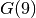

3.7. A third model and its implementation
By using the same variables Y[i][j] = X[j] - X[i] in our improved version of our second model in the previous section, we were able to couple the effect of the propagations of the “quaternary constraints”. But these constraints lack a global vision of the propagation and this is were the global AllDifferent constraint comes into the picture.
You can find the code in the file tutorials/cplusplus/chap3/golomb5.cc
Let’s replace the quaternary constraints by the AllDifferent constraint on the Y variables:
std::vector<IntVar*> Y;
for (int i = 1; i <= n; ++i) {
for (int j = i + 1; j <= n; ++j) {
IntVar* const diff = s.MakeDifference(X[j], X[i])->Var();
Y.push_back(diff);
diff->SetMin(1);
}
}
s.AddConstraint(s.MakeAllDifferent(Y));
and compare our three implementations, again to compute :
| Statistics | Impl1 | Impl2 | Impl2+ | Impl3 |
|---|---|---|---|---|
| Time (s) | 4,712 | 48,317 | 1,984 | 0,338 |
| Failures | 51 833 | 75 587 | 53 516 | 7 521 |
| Branches | 103 654 | 151 169 | 107 025 | 15 032 |
| Backtracks | 51 836 | 75 590 | 53 519 | 7 524 |
What an improvement! In the next section, we present two strategies that generally allow to tighten a given model and thus improve, sometimes dramatically, the search time.
Google or-tools |
User's Manual
Google search
Welcome
Tutorial examples
Current chapter
3. Using objectives in constraint programming: the Golomb ruler problem
Previous section
3.6. A second model and its implementation